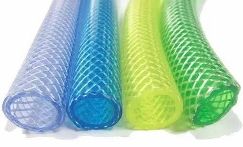

📍 Kurnool, Andhra Pradesh
PVC, CPVC & UPVC Pipes and Fittings in Kurnool
Sri Lakshmi Narasimha Traders is a wholesale and retail supplier of PVC, CPVC and UPVC pipes and fittings in Kurnool, serving dealers, retailers, farmers, plumbers, contractors and builders.
About Us
Sri Lakshmi Narasimha Traders was established on 18 February 2012 in Kurnool, Andhra Pradesh. We supply PVC, CPVC and UPVC pipes and fittings, garden pipes, suction pipes and ball valves.
We are a wholesale and retail supplier serving dealers, retail shops, farmers, plumbers, contractors and builders across Kurnool District.
Our Brands
We deal with trusted brands for quality pipe and plumbing solutions.

Nandi
PVC & Agriculture Products

Star
Pipes & Fittings

Sanystar
Pipes & Fittings

Ashirvad
CPVC Pipes & Fittings
Why Choose Sri Lakshmi Narasimha Traders?
We focus on reliable products and dependable wholesale service for customers, dealers and businesses across Kurnool District.
Established Business
Serving customers since 18 February 2012.
Wholesale Supply
Wholesale supply for dealers and retail businesses.
Wide Product Range
PVC, CPVC and UPVC pipes, fittings and other plumbing products.
Kurnool Based
Serving customers, dealers and businesses across Kurnool District.
Our wholesale network
We Are Available at Several Places
Reliable PVC, CPVC, UPVC pipes, fittings and plumbing products available at several places across Kurnool District.
Our Products & Shop
Explore our products and shop. We provide quality PVC, CPVC and UPVC pipes, fittings and other plumbing and agricultural products.

PVC Pipes & Fittings
Quality PVC pipes and fittings for plumbing and water supply.
View price list →CPVC Pipes & Fittings
CPVC pipes and fittings for hot and cold water applications.
View price list →UPVC Pipes & Fittings
Reliable UPVC pipes and fittings for water supply and plumbing.
View price list →
Garden Pipes
Flexible garden pipes for gardening, agriculture and water use.

Suction Pipes
Suction pipes for agriculture and water pumping applications.

Ball Valves
Quality valves for controlling water flow in pipe systems.

Our Shop
Visit Sri Lakshmi Narasimha Traders in Kurnool for your requirements.
Contact Us
Get in touch with Sri Lakshmi Narasimha Traders for wholesale enquiries and product information.
📍 Visit Us
76-106-A5-1, Guru Raghavendra Nagar,
Ballary Chowrastha,
Kurnool, Andhra Pradesh - 518003
Our Location
76-106-A5-1, Guru Raghavendra Nagar, Ballary Chowrastha, Kurnool, Andhra Pradesh - 518003